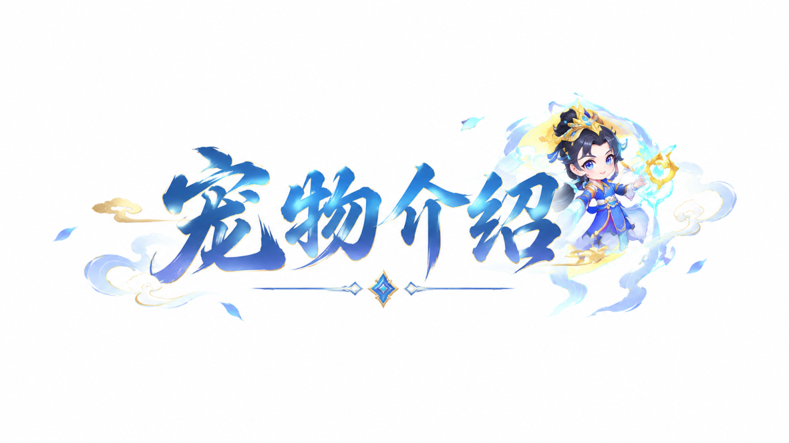
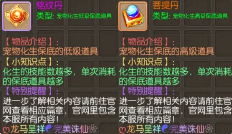
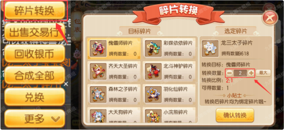
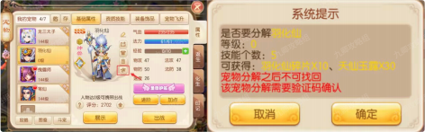
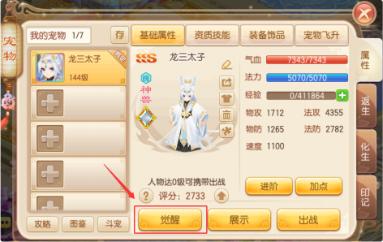
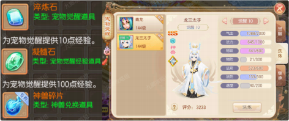
| 等级 | 1 | 2 | 3 | 4 | 5 | 6 | 7 | 8 | 9 | 10 |
|---|---|---|---|---|---|---|---|---|---|---|
| 经验 | 10000 | 15000 | 20000 | 25000 | 30000 | 35000 | 50000 | 75000 | 110000 | 150000 |
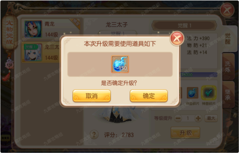
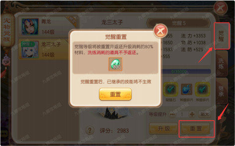
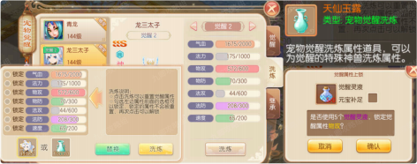
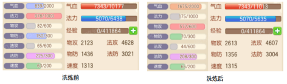
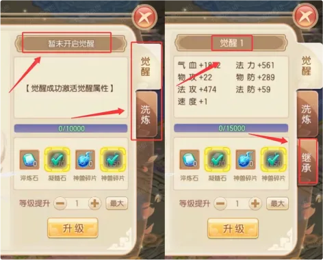
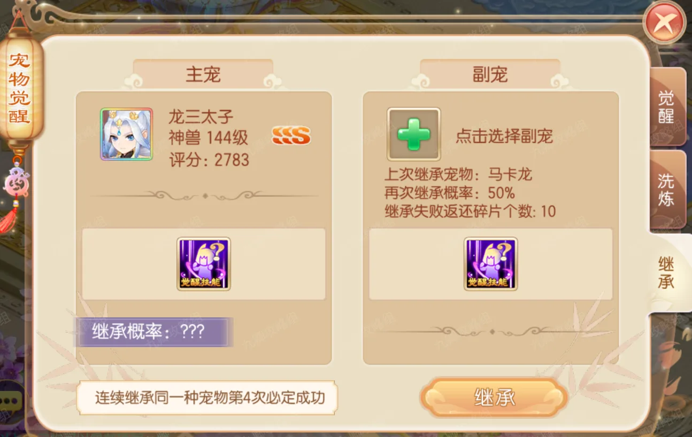
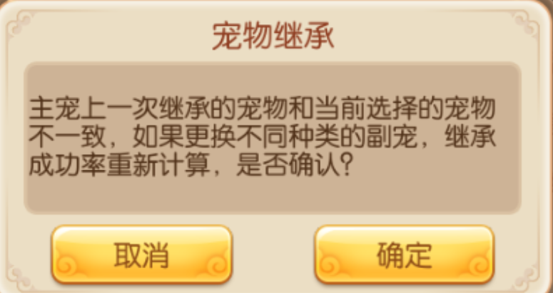
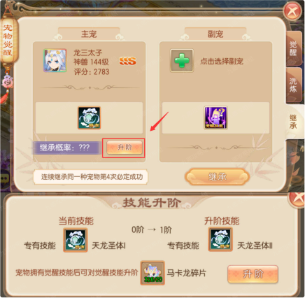
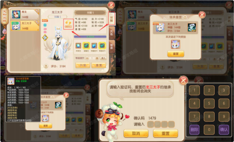
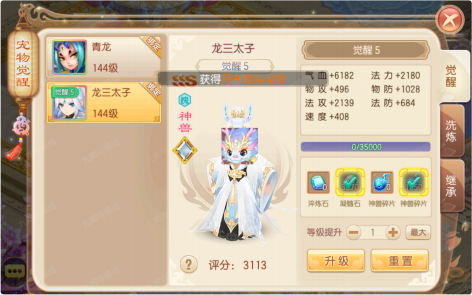
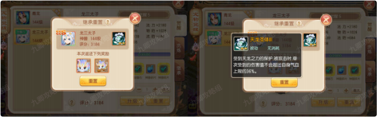
| 等级 | 2 | 3 | 4 | 5 | 6 | 7 | 8 | 9 | 10 | 11 | 12 | 13 | 14 | 15 | 16 | 17 | 18 | 19 | 20 | 21 | 22 | 23 | 24 | 25 |
|---|---|---|---|---|---|---|---|---|---|---|---|---|---|---|---|---|---|---|---|---|---|---|---|---|
| 需要经验 | 90 | 150 | 230 | 330 | 450 | 590 | 750 | 930 | 1130 | 1350 | 1590 | 1850 | 2130 | 2430 | 2750 | 3090 | 3450 | 3830 | 4230 | 4650 | 5090 | 5550 | 6030 | 6530 |
| 等级限制 | 人物 80 级可以升的范围 | 人物 90 级可以升的范围 | 人物 99 级可以升的范围 | |||||||||||||||||||||
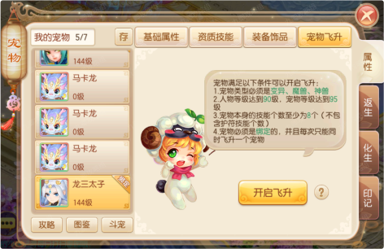
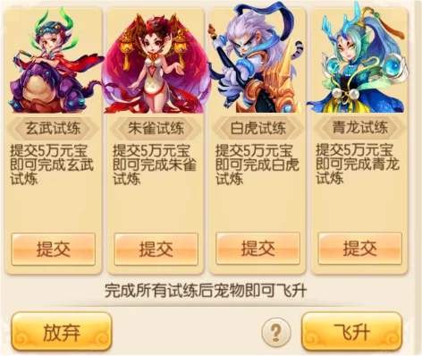
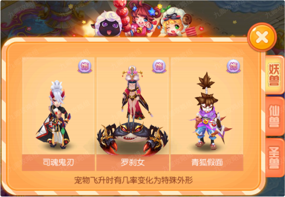
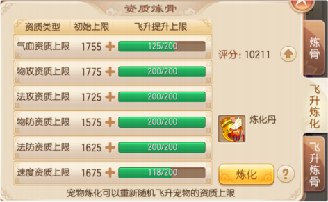
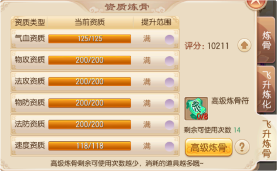
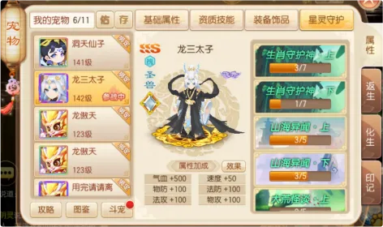
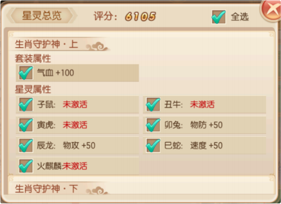
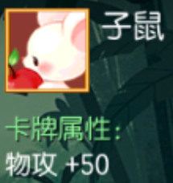
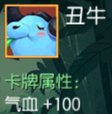
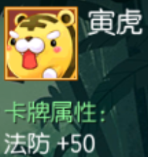
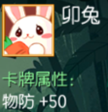
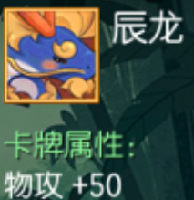
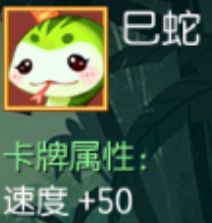
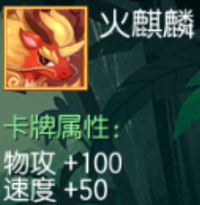
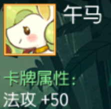
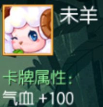
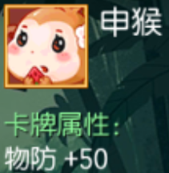
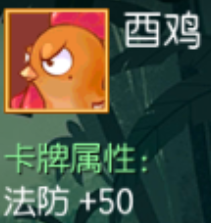
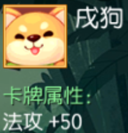
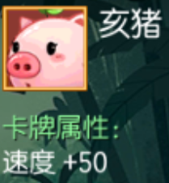
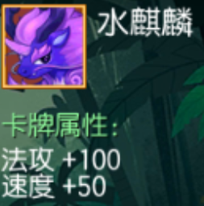
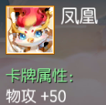
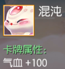
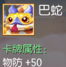
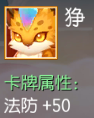
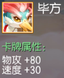
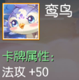
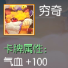
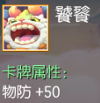
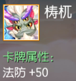
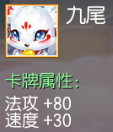
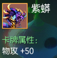
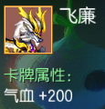
| 超级金刚 ·佑 | 物理伤害结果提升 5%。 |
| 超级重击 ·佑 | 物理暴击概率增加 2%。 |
| 超级蛮力 ·佑 | 增加自身等级 *0.6 的攻击力。 |
| 超级技巧 ·佑 | 物理和法术反击伤害提升10% |
| 超级偷袭 ·佑 | 物理攻击时忽视对方 5% 的物理防御。 |
| 超级致命 ·佑 | 物理暴击伤害提高 10%。 |
| 超级怒火 ·佑 | 法术暴击概率增加 2%。 |
| 超级剧烈 ·佑 | 法术波动范围增加 5% |
| 超级法伤 ·佑 | 法术伤害结果提升 5%。 |
| 超级法穿 ·佑 | 法术攻击时忽视对方 5% 的法术防御。 |
| 超级冥思 ·佑 | 战斗中 ，每回合结束时恢复等级 *2 点法力。 |
| 超级律令 ·佑 | 使用技能时所消耗的法力减少 20%。 |
| 超级吸血 ·佑 | 物理攻击可吸取对方所掉气血的10% ，对拥有鬼魅技能的单位无效。 |
| 超级再生 ·佑 | 战斗中 ，回合初恢复等级 *3 的气血。 |
| 超级招架 ·佑 | 受到物理伤害时 ，有 30% 概率减免 10% 的伤害结果 |
| 超级复仇 ·佑 | 受到物理攻击 5% 几率进行反击 ，伤害为正常伤害的100%。 |
| 超级魔反 ·佑 | 受到物理攻击 5% 几率进行魔法反击 ，伤害为正常伤害的100%。 |
| 超级抗拒 ·佑 | 5% 概率使自身受到的法术伤害变为1。 |
| 超级铁壁 ·佑 | 5% 概率使自身受到的物理伤害变为1。 |
| 超级坚韧 ·佑 | 提升等级 *3 的物理防御。 |
| 超级固法 ·佑 | 提升等级 *3 的法术防御。 |
| 超级幸运 ·佑 | 法术躲避增加 5% |
| 超级飞行 ·佑 | 物理躲避增加 5% ，物理命中增加 5% |
| 超级金睛 ·佑 | 对隐身单位的伤害提高 20% |
| 超级持久 ·佑 | 受到的增益状态持续回合数 +1 |
| 超级毒药 ·佑 | 物理或法术攻击时 ，2% 几率使目标 5 回合内中毒。 |
| 超级气势 ·佑 | 出战前 2 回合物理伤害结果增加10%。 |
| 超级震慑 ·佑 | 出战前 2 回合法术伤害结果增加10%。 |
| 超级精准 ·佑 | 对拥有飞行类、迅捷类技能的目标伤害结果增加10% |
| 超级冰霜 ·佑 | 攻击命中时有 2% 概率降低目标速度 6 回合 ，该效果不能叠加。 |
| 超级光明 ·佑 | 受到治疗 ，提高治疗效果 10%。 |
| 超级破防 ·佑 | 攻击命中时有 2% 概率降低目标物理防御 6 回合 ，该效果不能叠加。 |
| 超级丧胆 ·佑 | 攻击命中时有 2% 概率降低目标物理攻击 6 回合 ，该效果不能叠加。 |
| 超级迟钝 ·佑 | 攻击命中时有 2% 概率降低目标物理闪避等级 6 回合 ，该效果不能叠加。 |
| 超级断筋 ·佑 | 攻击命中时有 2% 概率降低目标速度 6 回合 ，该效果不能叠加。 |
| 超级涣神 ·佑 | 攻击命中时有 2% 概率降低目标法术防御 6 回合 ，该效果不能叠加。 |
| 超级碎灵 ·佑 | 攻击命中时有 2% 概率降低目标法术攻击 6 回合 ，该效果不能叠加。 |
| 超级灭心 ·佑 | 攻击命中时有 2% 概率降低目标封印命中等级 6 回合 ，该效果不能叠加。 |
| 超级毁镜 ·佑 | 攻击命中时有 2% 概率降低目标封印抗性 6 回合 ，该效果不能叠加。 |
| 超级迟缓 ·佑 | 减少自身速度的10%。 |
| 圣兽护佑 | 为角色增加护佑圣兽 2% 的气血护盾 ，物理攻击 ，法术攻击 ，物理防御 ，法术防御 ，速度。 |
| 圣兽护佑 | 为角色增加护佑圣兽 4% 的气血护盾 ，物理攻击 ，法术攻击 ，物理防御 ，法术防御 ，速度。 |
| 圣兽护佑 | 为角色增加护佑圣兽 6% 的气血护盾 ，物理攻击 ，法术攻击 ，物理防御 ，法术防御 ，速度。 |
| 圣兽护佑 | 为角色增加护佑圣兽 8% 的气血护盾 ，物理攻击 ，法术攻击 ，物理防御 ，法术防御 ，速度。 |
| 圣兽护佑 | 为角色增加护佑圣兽 10% 的气血护盾 ，物理攻击 ，法术攻击 ，物理防御 ，法术防御 ，速度。 |
| 圣兽护佑 | 为角色增加护佑圣兽 12% 的气血护盾 ，物理攻击 ，法术攻击 ，物理防御 ，法术防御 ，速度。 |
| 圣兽护佑 | 为角色增加护佑圣兽 14% 的气血护盾 ，物理攻击 ，法术攻击 ，物理防御 ，法术防御 ，速度。 |